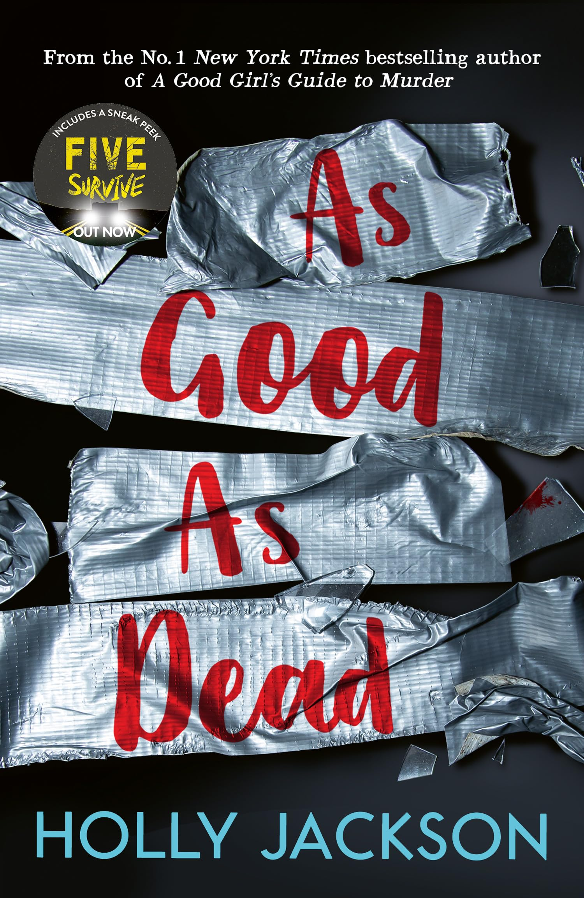

As Good as Dead

1984
The Half-Blood Prince

| As Good As Dead | 1984 | Harry Potter |
|---|---|---|
| This was page turner and kept me on the edge of my seat. There were countless plot twists and I thoroughly enjoyed this novel. | Unfortunately I couldn't finish this novel because I fell into a reading slump and got busy with school; however, I was truly fascinated by this book, and I hope to someday finish it. | I grew up on the Harry Potter movies, and for some reason the 6th book has always been my favorite. I haven't read it in years but it will always be one of my favorite novels of all time. |
| 10/10 | 8/10 | 10/10 |